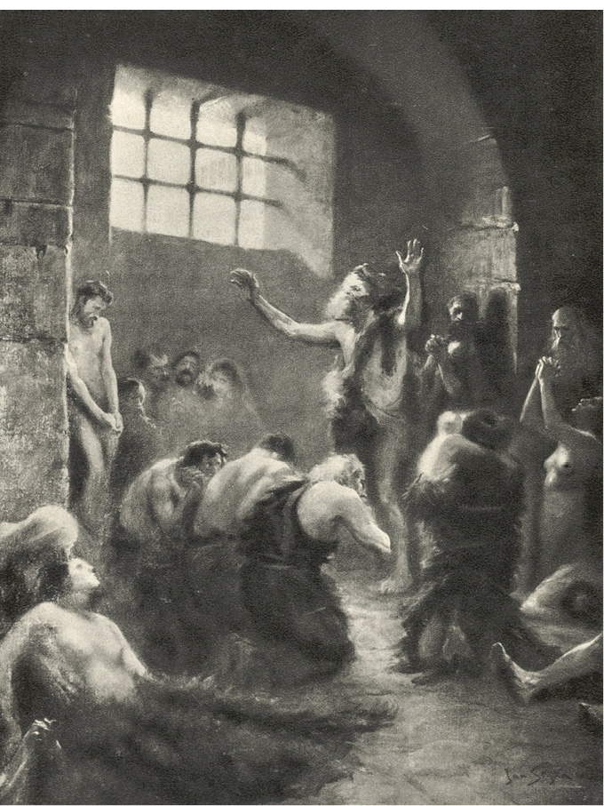
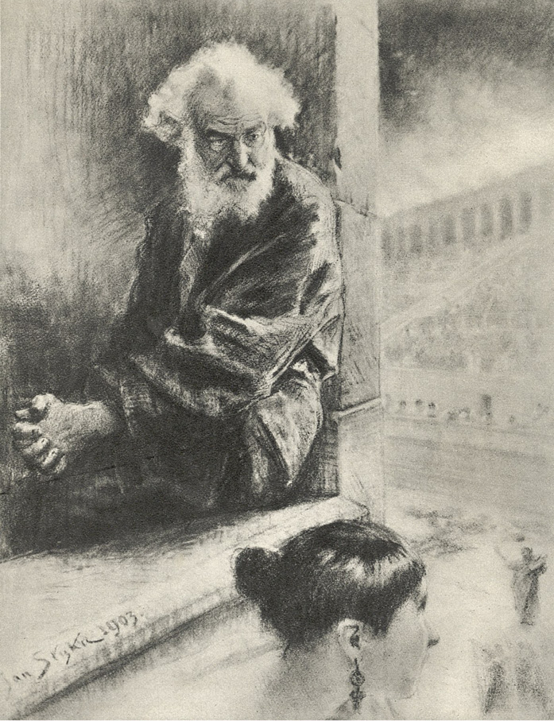
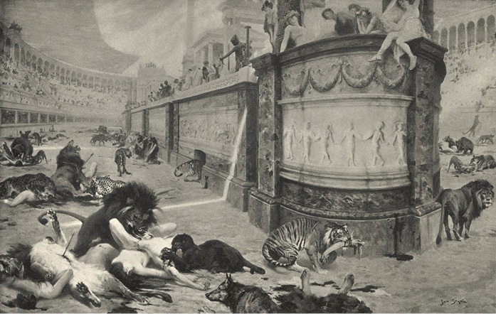

LVI
Nežli Flaviové zbudovali Colosseum, byly amfitheatry stavěny ze dřeva, a proto skoro všecky při požáru shořely. Nero však za účelem uspořádání her dal jich vybudovati několik a mezi nimi jeden obrovský, na který hned, jakmile oheň byl uhašen, začaly býti dopravovány po moři i po Tibru mohutné kmeny stromů, vykácených na svazích Atlasu. Poněvadž hry měly velkolepostí a počtem obětí převýšiti všecky předcházející, pořízeny rozsáhlé prostory pro umístění lidí i zvířat. Tisíce řemeslníků pracovalo o budově dnem i nocí. Stavělo se a zdobilo bez oddechu. Lid si vypravoval zázraky o zábradlích, vykládaných bronzem, jantarem, sloní kostí, perletí a štíty ze zámořských želv. Potrubí, která běžela podél sedadel a byla naplněna ledovou vodou z hor, měla v budově udržovati příjemný chládek, byť i za největších veder. Ohromné, nachové „velarium“ chránilo proti slunečním paprskům. Mezi řadami sedadel byly rozestaveny kadidelnice, na nichž měly hořeti vonné arabské byliny; nahoře byla umístěna zařízení na poprašování diváků šafránovou rosou a vervenou. Proslulí stavitelé Severus a Celer vynaložili všecky svoje vědomosti, aby zbudovali nevyrovnatelné divadlo, které by zároveň mohlo pojmouti takový počet diváků, jakého dosud žádné jiné ze známých nemohlo pojmouti.
Proto také v den, v němž měl býti zahájen ludus matutinus, čekaly davy lidu od úsvitu na otevření bran, s rozkoší naslouchajíce řevu lvů, chrčivému kňučení pardálů a vytí psů. Zvířatům nebylo dáno žrádlo po dva dny, naproti tomu byly před nimi vystrkovány krvavé kusy masa, aby tím více byla u nich vydrážděna vzteklost a hlad. Chvílemi se také zvedala taková bouře divokých skřeků, že lidé stojící před cirkem nemohli spolu rozprávěti a citlivější bledli strachem. Zároveň však s východem slunce ozvaly se v okruhu cirku mohutné, ale klidné písně, jimž bylo nasloucháno s údivem; lidé si navzájem opakovali: „Křesťané! Křesťané!“ Četné jejich zástupy byly přivedeny do amfitheatru ještě v noci a ne z jednoho jen vězení, jak bylo původně v úmyslu, nýbrž ze všech po částkách. Vědělo se v davu, že podívaná se potáhne po celé týdny a měsíce, ale docházelo k hádkám, budou-li s onou částí křesťanů, která byla určena pro dnešek, hotovi za jeden den. Hlasy mužské, ženské i dětské, zpívající ranní píseň, byly tak četné, že znalci tvrdili, že kdyby třebas i po stu i dvou stech těl bylo vysíláno najednou, zvířata se unaví, nasytí a do večera nestačí, aby všecky rozsápala. Jiní ujišťovali, že příliš veliký počet obětí, vystupujících v aréně najednou, rozptyluje pozornost a nedovoluje, aby se člověk kochal pohledem, jak náleží. Dle toho, jak se blížil okamžik otevření chodeb, vedoucích do vnitřku, zvaných vomitoria, lid oživoval, rozveseloval se a vedl hádky o různých věcech, jež se týkaly podívané. Začaly se tvořiti strany, zdůrazňující větší obratnost lvů nebo tygrů při rozsápání lidí. Tu i tam byly činěny sázky. Jiní však hovořili o gladiátorech, kteří měli v aréně vystoupiti dříve nežli křesťané, a opět se tvořily strany brzy Samnitů1, brzy Gallů, brzy mirmillonů, tu zase Thráků, tu síťovníků2. Za časného rána začaly jejich větší nebo menší oddíly za vedení mistrů, zvaných lanisté, hrnouti se do amfitheatru. Nechtějíce se namáhati předčasně, šli beze zbroje, často úplně nazí, často se zelenými větvemi v rukou nebo ověnčeni kvítím, mladí, krásní, za ranního světla a plni života. Jejich těla, lesknoucí se olejem, mohutná, jako do mramoru tesaná, uváděla v nadšení lid mající zálibu ve tvarech. Mnozí z nich byli osobně známi a přes tu chvíli se ozývaly výkřiky: „Buď vítán, Furnie! Buď vítán, Leone! Buď vítán, Maxime! Buď vítán, Diomede!“ Mladé dívky zvedaly k nim oči plné lásky, oni pak se rozhlíželi, kde která je nejkrásnější, a ozývali se k nim žertovnými slovy, jako by jich netížila žádná starost, posílajíce polibky nebo volajíce: „Obejmi, nežli obejme smrt!“ Potom mizeli ve branách, z nichž mnozí neměli již vyjíti. Ale stále nové příčiny rozptylovaly pozornost davů. Za gladiátory se ubírali mastigoforové, totiž lidé, opatření biči, a těch povinností bylo šlehati do zápasníků a povzbuzovati je. Pak táhli mezci směrem ke „spolariu“ celé řady vozů, na nichž byly naloženy hranice dřevěných rakví. Při pohledu na to lid se radoval, usuzuje z jejich počtu na ohromnost podívané. Potom kráčeli lidé, kteří měli raněné dobíjeti, ustrojení tak, aby se každý podobal Charonovi nebo Merkurovi, pak opět lidé, dohlížející na pořádek v cirku a rozdávající místa na sedadla, potom otroci, kteří měli roznášeti jídla a ochlazující nápoje, konečně praetoriáni, které měl každý caesar v amfitheatru po ruce.
Konečně byla otevřena vomitoria a davy se hrnuly dovnitř. Ale množství těch, kdož se nahromadili, bylo takové, že se stále jen hrnuli a hrnuli po celé hodiny, až bylo s podivením, že amfitheatr může pojmouti tak nespočetný lid. Řev zvířat, větřících lidské výpary, ještě se stupňoval. Lid v cirku hlučel jako vlnobití za bouře, zaujímaje místa.
Nakonec přibyl praefekt města, provázen „vigily“, a za ním začaly se nepřerušeným již řetězem střídati lektiky senátorů, konsulů, praetorů, aedilů3, úředníků veřejných i palácových, praetoriánské stařešiny, patriciů a elegantních žen. Před některými lektikami ubírali se liktoři4, nesouce sekyrky uprostřed svazku prutů, před ostatními hloučky otroků. Na slunci se třpytilo zlacení lektik, bílá a různobarevná roucha, pera, náušnice, šperky, ocel sekyrek. Z cirku dolétal jásot, jímž lid vítal vynikající hodnostáře. Občas dostavovaly se ještě neveliké oddíly praetoriánů.
Nicméně kněží z různých chrámů přibyli o něco později a teprve za nimi byly neseny posvátné panny Vestiny, před nimiž se ubírali liktoři. Se zahájením podívané čekalo se již jen na Caesara, jenž nechtěje lidu rovněž způsobiti příliš dlouhé čekání a snaže se, aby si ho získal spěchem, dostavil se záhy v průvodu Augusty a Augustianů.
Petronius dostavil se s Augustiany, maje ve své lektice Vinitia. Věděl, že Lygie jest nemocna a upadá do bezvědomí, ale poněvadž v posledních dnech byl vchod do věznice nejpřísněji střežen, poněvadž dřívější stráže byly nahrazeny novými, jimž bylo zakázáno mluviti s hlídkami, jakož i sdělovati sebemenší zprávy těm, kteří přicházeli se vyptávat na věžně, nebyl jist, není-li Lygie mezi obětmi, určenými pro první den podívané. Lvům dáti mohli na pospas i nemocnou, byť i byla v bezvědomí. Ale protože oběti měly býti obšity kožemi zvířat a posílány v celých tlupách do arény, nemohl se nikdo z diváků přesvědčiti, je-li mezi nimi o jednu více nebo méně, a nikdo nemohl žádné rozeznati. Stráže a všecko zřízenectvo amfitheatru bylo podplaceno, s bestiarii pak byla uzavřena dohoda, že ukryjí Lygii do nějaké tmavé kobky amfitheatru a v noci ji vydají do rukou jednoho Vinitiova pachtýře, který ji neprodleně zaveze do hor Albských. Petronius, zasvěcen v tajemství, radil Vinitiovi, aby se s ním zjevně odebral do amfitheatru a teprve u vchodu prokradl se v davu a pospíšil do kobek, kdež měl osobně ukázati strážím na Lygii, aby se předešlo možným omylům.
Strážní hlídky jej vpustily malými dvířky, jimiž vycházely samy. Jeden z nich, jménem Syrus, zavedl jej okamžitě ke křesťanům. Cestou pravil:
„Nevím, pane, najdeš-li, co hledáš. Vyptávali jsme se na dívku jménem Lygie, ale nikdo nám nedal odpovědi. Je však možno, že nám nedůvěřují.“
„Je jich mnoho?“ ptal se Vinitius.
„Mnoho z nich, pane, musí zůstat na zítřek.“
„Jsou mezi nimi nemocní?“
„Takových, kteří by se nemohli udržeti na nohou, není.“
To praviv, Syrus otevřel dveře i vešli do jakéhosi ohromného, ale nízkého a tmavého sklepení, poněvadž světlo přicházelo do něho jen zamřížovanými otvory, oddělujícími je od arény. Vinitius nemohl z počátku ničeho rozeznati, slyšel jen ve sklepení šum hlasů a jásot lidu, dolétající z amfitheatru. Ale za chvíli, když jeho oči uvykly tmě, spatřil celé zástupy prapodivných bytostí, podobajících se vlkům a medvědům. Byli to křesťané, zašití do koží zvířat. Jedni z nich stáli, druzí se modlili, klečíce. Tu i tam po dlouhých vlasech, splývajících po kůži, bylo možno uhodnouti, že obětí jest žena. Matky, podobajíce se vlčicím, nesly na rukou děti, rovněž huňatě obšité. Ale pod kožemi se vynořovaly jasné tváře, oči v přítmí se leskly radostí a horečkou. Bylo zjevno, že většinu těch lidí ovládla jediná myšlenka, výlučná a nadpozemská, která ještě za života je učinila necitlivými ke všemu, co se kolem nich mohlo díti a je potkati. Někteří, tázáni Vinitiem po Lygii, dívali se na něho očima, jako ze sna probuzenýma, neodpovídajíce na otázky; jiní se na něho usmívali, kladouce prst na ústa nebo ukazujíce na železné mříže, jimiž vnikaly jasné proudy světla. Jen děti tu a tam plakaly, poděšeny řevem bestií, vytím psů, vřavou lidu a postavami vlastních rodičů, podobajících se zvířatům. Vinitius, kráčeje po boku strážce Syra, díval se do tváří, hledal, vyptával se, chvílemi klopýtal o těla těch, kdož omdleli v tlačenici, puchu a horku, a prodíral se dále do tmavého pozadí sklepení, které se zdálo býti tak rozlehlé jako celý amfitheatr.
Ale pojednou se zastavil, protože se mu zdálo, že nablízku mříží se ozval jakýsi, jemu známý hlas. Naslouchav chvíli, obrátil se a prodrav se davem, stanul poblíž. Proud světla padal na hlavu mluvícího a v tom jasu rozeznal Vinitius pod vlčí koží hubenou a neúprosnou tvář Crispovu.

Proud světla padal na hlavu mluvícího…
„Pykejte za své hříchy,“ mluvil Crispus, „neboť chvíle nadejde co nevidět! Kdo se však domnívá, že smrtí samou vykoupí viny, ten se dopouští nového hříchu a bude uvržen do ohně věčného. Každým svým hříchem, kterého jste se za života dopustili, obnovovali jste muka Pána; kterak tedy se opovažujete míti za to, že by muka, která na vás čekají, mohla vykoupiti tamta? Stejnou smrtí zemrou dnes spravedliví i hříšní, ale pán své rozezná. Běda vám, neboť zuby lvů rozsápají těla vaše, ale nerozsápají vašich vin ni vašeho účtu s Bohem! Pán projevil dosti milosrdenství, jelikož dovolil, aby přibit byl na kříž, ale od oné chvíle bude jen soudcem, který žádné viny nenechá bez trestu. Kdož tedy jste myslili, že mukami smyjete hříchy své, rouhali jste se spravedlnosti božské a tím hlouběji budete svrženi. Skončilo se milosrdenství a přišel čas hněvu božího. Hle, za okamžik octnete se před strašlivým soudem, před kterým stěží šlechetný obstojí! Pykejte za hříchy, neboť otevřen jest jícen pekelný, a běda vám, muži i ženy, běda vám, rodiče i děti!“
A natáhnuv kostnaté ruce, potřásal jimi nad skloněnými hlavami, nezastrašen, ale také neúprosný ke smrti, na kterou měli za chvíli jíti všichni ti odsouzenci. Po jeho slovech ozvaly se hlasy: „Pykejme za své hříchy!“– načež se sneslo mlčení a bylo jen slyšeti pláč dětí a nárazy rukou na prsa. Vinitiovi tuhla krev v žilách. On, jenž všecku naději vložil do milosrdenství Kristova, slyšel nyní, že nadešel den hněvu a že ani smrt v aréně nezjedná milosrdenství. Hlavou mu sice proletěla myšlenka, jasná a rychlá jako blesk, že by aploštol Petr jinak promluvil k těm, kdo mají zemříti, nicméně ta vyhrůžná a fanatismu plná slova Crispova i to tmavé sklepení se mřížemi, za nimiž bylo pole muk, i blízkost jejich i tlačenice obětí, přistrojených již k smrti, naplnily jeho duši hrůzou a zděšením. To vše dohromady připadalo mu strašlivé a stokrát děsnější nežli nejkrvavější bitvy, kterých se zúčastnil. Puch a žár jej začaly dusiti. Studený pot mu vyrazil na čelo. Byl jat obavou, že omdlí jako ti, o jejichž těla klopýtal, pátraje v pozadí sklepení; když tedy ještě si pomyslil, že každé chvíle se mohou otevříti mříže, začal volati hlasitě Lygii i Ursa, doufaje, že ne-li oni, tedy kdosi, jenž je zná, mu odpoví.
Vskutku také jakýsi člověk, oblečený za medvěda, zatáhl jej za tógu a řekl:
„Pane, zůstali ve vězení. Já poslední byl jsem vyveden a viděl jsem ji nemocnou na loži.“
„Kdo jsi?“ ptal se Vinitius.
„Fossor, v jehož chatě pokřtil tě apoštol Petr, pane. Byl jsem uvězněn před třemi dny a ještě dnes umru.“
Vinitius si oddychl. Vcházeje sem, přál si, aby našel Lygii, nyní však byl hotov děkovati Kristu, že dívka tu není, a v tom spatřoval projev milosrdenství.
Zatím jej fossor zatáhl ještě jednou za tógu a řekl:
„Pamatuješ se, pane, že jsem tě dovedl k vinici Corneliově, kde v kůlně vyučoval apoštol?“
„Pamatuji,“ odpověděl Vinitius.
„Viděl jsem jej potom tři dni předtím, nežli jsem byl uvězněn. Dal mi požehnání a řekl, že přijde do amfitheatru učinit kříž nad hynoucími. Rád bych na něho hleděl v okamžiku smrti a viděl znamení kříže, neboť pak bude mi snazší zemřít. Nuže, víš-li, pane, kde jest, pověz mi to!“
Vinitius snížil hlas a odvětil:
„Jest mezi lidmi Petroniovými, přestrojen za otroka. Nevím, kde si vybrali místo, ale vrátím se do cirku a rozhlédnu se. Dívej se na mne, až vejdete do arény, já se pak zvednu a obrátím hlavu v jejich stranu. Tehdy jej najdeš očima.“
„Díky ti, pane, a pokoj s tebou!“
„Spasitel budiž ti milostiv!“
„Amen.“
Vinitius vyšel z „cunicula“ a odebral se do amfitheatru, kde měl místo vedle Petronia mezi ostatními Augustiany.
„Je zde?“ ptal se ho Petronius.
„Není. Zůstala ve věznici.“
„Slyš, co mne ještě napadlo! Ale naslouchaje, dívej se raději na Nigidii, aby se zdálo, že mluvíme spolu o jejím účesu…! Tigellinus a Chilon hledí na nás v této chvíli.“
„Nuže, slyš! Ať Lygii položí v noci do rakve a vynesou z věznice jako nebožku – toho ostatního se domyslíš.“
„Ano,“ odpověděl Vinitius.
Další hovor jim přerušil Tullius Senetio, který nachýliv se k nim, řekl:
„Nevíte, dostanou-li křesťané zbraň?“
„Nevíme,“ odpověděl Petronius.
„Byl bych raději, kdyby ji dostali,“ pravil Tullius, „jinak se aréna velmi brzy stane podobnou řeznickým jatkám. Ale jaký to velkolepý amfitheatr!“
Opravdu, pohled byl nádherný. Nižší sedadla, přeplněná tógami, bělela se jako sníh. Na pozlaceném „pódiu“ seděl Caesar s diamantovým náhrdelníkem, se zlatým věncem na hlavě, vedle něho krásná a zachmuřená Augusta, vedle po obou stranách vestálky, vysocí úředníci, senátoři v lemovaných pláštích, vojenská stařešina v lesknoucích se pancéřích, zkrátka vše, co bylo v Římě mocné, skvělé a bohaté. V dalších řadách seděli rytíři a výše se do kruhu černalo moře lidských hlav, nad nimiž splývaly se sloupů girlandy, uvité z růží, lilií, sasanek, břečtanu a vinné révy.
Lid hlučně hovořil, jednotlivci volali na sebe, zpívalo se, chvílemi propukal smích nad nějakým vtipným slovem, které bylo navzájem posíláno z řady do řady, dupalo se nedočkavostí, aby podívaná byla urychlena.
Konečně se dupot stal podoben rachotu hromu a trval bez ustání. Tehdy praefekt města, který již dříve byl se skvělou družinou objel arénu, dal znamení šátkem, na němž se v amfitheatru odpovědělo všeobecným: „Aaa…!“, které se vydralo z tisícerých prsou.
Obvyklá podívaná začínala se honbou na divokou zvěř, a v tom vynikali různí barbaři od severu a jihu.
Tentokrát však mělo býti zvířat až příliš mnoho, a proto se začalo andabaty, totiž lidmi opatřenými přílbami bez otvorů na oči, a tudíž zápasících mezi sebou naslepo. Několik jich, vstoupivši pojednou do arény, začalo mávati ve vzduchu meči, mastigofoři pak pomocí dlouhých vidlic postrkovali jedny ke druhým, aby mohlo dojíti ke srážce. Elegantnější diváci hleděli lhostejně a pohrdavě na podobné divadlo, lid však se bavil nemotornými pohyby šermířů. A když se nahodilo, že se zápasníci postavili k sobě zády, propukal ve hlasitý smích, volaje: „Napravo!“ – „Nalevo!“ – „Přímo!“ – často uváděje protivníky úmyslně v omyl. Nicméně několik dvojic se střetlo a boj začínal býti krvavý. Zuřivější zápasníci odhazovali štíty, a podavše si levé ruce, aby se od sebe již neodloučili, pravicemi bojovali na život a na smrt. Kdo padl, zdvíhal palec vzhůru, prose tímto znamením o milost; ale na začátku podívané lid obyčejně se dožadoval smrti raněných, zvláště, šlo-li o andabaty, kteří majíce tváře zakryty, zůstávali mu neznámi. Zvolna se počet bojujících stále menšil, a když konečně zbyli pouze dva, byli poštváni proti sobě, takže střetnuvše se, padli oba na písek a vzájemně se na něm probodli. Tehdy za výkřiků: „Skončeno!“5 zřízenci odstranili mrtvoly, jinoši pak zahrabali krvavé stopy v aréně a posypali je lístky šafránu.
Nyní mělo dojíti k vážnějšímu boji, vzbuzujícímu dychtivost nejen u prostého davu, nýbrž i u lidí uhlazených, při kterém mladí patriciové nejednou činili ohromné sázky, obehrávajíce se často do poslední nitky. Hned také začaly kolovati z ruky do ruky tabulky, na něž byla vpisována jména oblíbenců, a současně množství sestercií, jaké každý sázel na svého vyvoleného. „Spectati“, totiž zápasníci, kteří v aréně již vystupovali a dosahovali v ní vítězství, získávali nejvíce přívrženců, nicméně mezi hráči byli i tací, kdož sázeli značné obnosy na gladiátory nové a úplně neznámé, doufajíce, že dosáhnou obrovských výher, dobudou-li ti tam vítězství. Sázky činil sám Caesar i kněží i vestálky i senátoři i rytíři i lid. Lidé prostého původu, nedostávalo-li se jim peněz, často dávali v sázku vlastní svobodu. Proto také se čekalo s tlukoucím srdcem, někdy i s úzkostí, až se šermíři objeví, a nejeden hlasitě činil sliby bohům, aby si zjednal jejich přízně pro svého oblíbence.
A tak, jakmile se ozvaly zvuky trub, nastala v amfitheatru chvíle očekávání. Tisíce očí se obrátilo k velikým železným závorám, k nimž přistoupil člověk přestrojený za Charona a za všeobecného mlčení třikrát zaklepal na ně kladivem, jako by vyvolával na smrt ony, kdož byli za nimi ukryti. Potom se pomalu otevřely obě polovice vrat, ukazujíce černý jícen, ze kterého se začali hrnouti do světlé arény gladiátoři. Kráčeli ve skupinách po dvaceti pěti lidech, odděleně Thrákové, odděleně mirmilloni, Samnité, Gallové, všichni těžce ozbrojení, a konečně „retiarii“6, držící v jedné ruce síť, ve druhé trojzubec. Při pohledu na ně strhl se tu a tam po lavicích potlesk, který se záhy změnil v jedinou ohromnou a dlouhotrvající bouři. Odshora dolů bylo viděti rozpálené tváře, tleskající dlaně a otevřená ústa, z nichž se vydíraly výkřiky. Oni pak obešli celou arénu stejným a pružným krokem, blýskajíce oružím a bohatou zbrojí, pak se zastavili před císařským ‚pódiem‘, hrdi, klidni a nádherní. Pronikavý hlas rohu ztišil potlesk a tehdy zápasníci vysoko vztyčili pravice, a zvedajíce oči i hlavy k Caesarovi, začali volati či vlastně zpívati táhlými hlasy:
„Ave, Caesar imperator!
Morituri te salutant!“7
Pak se rychle rozběhli od sebe, zaujímajíce zvláštní místa na obvodu arény. Měli na sebe udeřiti v celých skupinách, ale dříve bylo dovoleno proslulejším šermířům, aby svedli mezi sebou řadu jednotlivých bojů, ve kterých se nejlépe ukazovala síla, obratnost a odvaha protivníků. A tak hned ze středu „Gallů“ vystoupil zápasník, dobře známý milovníkům amfitheatru pode jménem „Řezníka“ (lanio), vítěz při mnohých hrách. Ve veliké přílbě na hlavě a v pancéři, objímajícím vpředu i zezadu jeho statná prsa, vypadal v záři ve žluté aréně jako obrovský, lesknoucí se chrobák. Neméně proslulý retiarius Calendio vystoupil proti němu.
Mezi diváky začaly se činiti sázky.
„Pět set sestercií na Galia!“
„Pět set na Calendia!“
„U Herkula, tisíc!“
„Dva tisíce!“
Zatím Gall, došed do středu arény, začal opět ustupovati s napřaženým mečem, a snižuje hlavu, bedlivě skrze otvory v přílbě sledoval protivníka, kdežto lehký retiarius rozkošných tvarů jako u sochy, úplně nahý kromě přepásky kolem kyčlí, rychle oběhl kolem nepřítele, půvabně pohazuje sítí, skláněje nebo zvedaje trojzubec a prozpěvuje obvyklou píseň „síťovníků“:
„Nechci tebe, rybu hledám,
Proč mi prcháš, Galle?“8
Ale Gall neprchal, neboť se za chvíli zastavil, a zůstav na místě, začal se obraceti pouze neznačným pohybem tak, aby měl nepřítele vždy vpředu.
V jeho postavě a příšerně veliké hlavě bylo teď cosi strašlivého. Diváci dokonale porozuměli, že to těžké, do mědi zkované tělo chystá se k náhlému výpadu, kterým boj může býti rozhodnut. Síťovník zatím tu k němu přiskakoval, tu zase odskakoval, prováděje svou trojzubou vidlicí pohyby tak rychlé, že je lidský zrak stěží mohl sledovati. Zaskřípění hrotů o štít ozvalo se několikrát, nicméně Gall ani sebou nezatřásl, prokazuje tím svou obrovskou sílu. Všecka jeho pozornost zdála se býti upoutána nikoli na trojzubec, nýbrž na síť, která bez ustání kroužila nad jeho hlavou jako zlověstný pták. Diváci, zatajivše dech v prsou, sledovali mistrovskou hru gladiátorů. Lanio, vyhlédnuv si vhodný okamžik, konečně se vrhl na protivníka, ten pak se stejnou rychlostí uhnul se pod jeho mečem a zvednuv paži, vzpřímil se a vrhl síť.
Gall, otočiv se na místě, zachytil ji štítem a pak oba odskočili od sebe. V amfitheatru se ozvaly výkřiky: „Macte!“ – kdežto v nižších řadách začaly se činiti nové sázky. Sám Caesar, který z počátku rozmlouval s vestálkou Rubrií a nevalně si dosud všímal divadla, otočil hlavu do arény.
Oni pak začali opět zápasiti tak zručně a s takovou přesností v pohybech, že se chvíli zdálo, že jim nejde o smrt nebo o život, nýbrž o to, aby ukázali svoji obratnost. Lanio, vyváznuv ještě dvakrát ze sítě, začal opětně ustupovati na obvod arény. Tehdy však ti, kdož mu nepřáli, nechtějíce, aby si odpočinul, začali křičeti: „Napadni!“ Gall uposlechl a napadl. Rámě síťovníkovo se pojednou zalilo krví a síť se mu svezla. Lanio se přikrčil a skočil, chtěje zasaditi poslední ránu. Leč v tom okamžiku Calendio, který se zúmyslně stavěl, že již nemůže vládnouti sítí, prohnul se na stranu, vyhnul se bodné ráně, a vhrouživ trojzubec mezi kolena protivníkova, povalil jej k zemi.
Ten chtěl povstati, ale ve mžiku jej opředly osudné provazce, do nichž každým pohybem silněji si zaplétal ruce i nohy. Zatím hroty trojzubce srážely jej k zemi rychle za sebou. Ještě jednou vynaložil všecky síly, opřel se o ruku a vzepjal se, aby povstal – marně! Ještě zvedl ke hlavě ochabující ruku, ve které nemohl již udržeti meč, a padl naznak. Calendio přitlačil mu k zemi krk hroty vidlice a opřev se oběma rukama o jejich žerď, otočil se směrem k císařské loži.
Celý cirk se začal otřásati potleskem a lidským řevem. Pro ty, kdož přáli Calendiovi, byl jim on v tom okamžiku větší nežli Caesar, ale právě proto zmizela v jejich srdci nenávist i proti laniovi, jenž na útraty vlastní krve jim nacpal kapsy. Rozdvojila se tudíž přání lidu. Na všech lavicích ukázaly se z polovice znamení smrti, z polovice milosti; ale síťovník se díval jen do lože Caesarovy a vestálek, čekaje, jak oni rozhodnou.
Na neštěstí neměl Nero lania rád, poněvadž při posledních hrách před požárem, uzavřev sázku proti němu, prohrál, spoléhaje na Licinia, značný obnos, vystrčil tedy ruku z pódia a obrátil palec k zemi.
Vestálky opakovaly to znamení ihned nato. Tehdy Calendio poklekl Gallovi na prsa, vyňal krátký meč, který nosil u pasu, a poodhrnuv pancéř u krku protivníkova, vrazil mu do hrdla trojhranný hrot až po rukojeť.
„Peractum est!“ rozlehly se hlasy v amfitheatru.
Lanio nějakou dobu sebou trhal jako podříznutý býk a nohama kopal do písku, potom se natáhl a zůstal bez hnutí.
Merkur9 nepotřeboval se přesvědčovati žhavým železem, žije-li ještě. Byl brzy odstraněn a pak vystoupily jiné dvojice, po jejichž zápase teprve se rozpoutal boj celých skupin. Lid se ho účastnil duší, srdcem, očima; řval, hulákal, hvízdal, tleskal, smál se, povzbuzoval bojovníky, zuřil. Gladiátoři, rozdělení v aréně ve dvě skupiny, zápasili se vzteklostí divokých zvířat; prsa narážela na prsa, těla se splétala ve smrtelném objetí, v kloubech praskaly statné údy, meče se hroužily do prsou a břich, ze zbledlých úst se chrlila krev do písku. Několik nováčků bylo ke konci zachváceno strachem tak děsným, že vytrhnuvše se z víru, dali se na útěk, ale mastigoforové ihned je zahnali do bitvy biči, na jejichž konci bylo olovo. Na písku se tvořily veliké, tmavé skvrny; čím dále tím více nahých a ozbrojených těl leželo podle sebe v řadě jako snopy. Živí bojovali na mrtvolách, naráželi na sebe pancéři, štíty, zkrvavujíce si nohy i zlámané oruží a padali. Lid samou radostí byl všecek bez sebe, opájel se smrtí, dýchal jí, nasycoval zrak pohledem na ni a s rozkoší vdechoval do plic její výpary.
Přemožení padli skoro všichni. Sotva jen několik raněných pokleklo uprostřed arény a třesouc se vztahovalo k divákům ruce s prosbou o milost. Vítězům byly rozdány odměny, věnce, olivové ratolesti a nastoupila chvíle odpočinku, která z rozkazu vševládného Caesara změnila se v hostinu. Ve vázách byly zapáleny vonné byliny. Postřikovači skrápěli lid šafránovým a fialovým deštíkem. Byly roznášeny ochlazující nápoje, pečená masitá jídla, sladké pečivo, víno, olivy a ovoce. Lid všecko hltal, rozprávěl a jásal ku poctě Caesarově, aby jej naklonil ke štědrosti tím větší. A vskutku, když byl ukojen hlad a uhašena žízeň, sta otroků vnesla koše plné dárků a z těch pacholata, oblečená za Amorky, vybírala různé předměty a oběma rukama je rozhazovala mezi lavice. Ve chvíli, když byly rozdávány loterní „tessery“, vznikla rvačka: lidé se tlačili, poráželi, šlapali druh po druhu, křičeli o pomoc, přeskakovali řady sedadel a dusili se ve strašlivé tlačenici, neboť komu se dostalo šťastnějšího čísla, mohl vyhráti třebas i dům se zahradou, otroka, nádherný šat nebo zvláštní divoké zvíře, které pak ihned zase prodával do amfitheatru. Povstávaly za tou příčinou takové zmatky, že praetoriáni musili často zaváděti pořádek, po každém rozdávání pak byli z hlediště vynášeni lidé se zlomenýma rukama, nohama, nebo dokonce ušlapaní v tlačenici k smrti.
Ale ti bohatší neúčastnili se boje o „tessery“. Augustiani se bavili tentokrát pohledem na Chilona a posměchy nad jeho marnou námahou, aby ukázal lidem, že na boj a prolévání krve může se dívati tak dobře jako každý jiný. Marně však nešťastný Řek vraštil obočí, hryzl se do rtů a zatínal pěsti tak, že se mu až nehty vrážely do dlaní. Jeho řecká přirozenost právě tak jako jeho osobní zbabělost nesnášely takových podívaných. Tvář mu zbledla, čelo se operlilo krůpějemi potu, rty zesinaly, zuby začaly drkotati a tělo bylo zachváceno třesavkou. Po skončeném boji přišel poněkud k sobě, ale když si o něho jiní brousili jazyky, popadl jej náhlý hněv a Chilon začal se zoufale brániti.
„Vida, Řeku, pohled na roztrhanou lidskou kůži je ti nesnesitelný!“ řekl Vatinius, tahaje ho za plnovous.
Chilon vycenil na něho své poslední dva žluté zuby a odvětil:
„Můj otec nebyl ševcem, a proto jí nedovedu spravovat.“
„Macte! Habet!“ zvolalo několik hlasů.
Ale jiní si tropili smích dále:
„On za to nemůže, že má v prsou kus sýra místo srdce!“ zvolal Senetio.
„Ty zase nemůžeš za to, že máš místo hlavy měchýř,“ odvětil Chilon.
„Snad se z tebe stane gladiátor! Vypadal bys hezky se sítí v aréně!“
„Kdybych do ní chytil tebe, chytil bych zasmrádajícího ťulpasa.“
„A co bude s křesťany?“ ptal se Festus z Ligurie10. „Nechtěl by ses státi psem a kousat je?“
„Nerad bych se stal tvým bratrem.“
„Ty maeotský11 trubče!“
„Ty ligurský mezku!“
„Nejspíše tě svědí kůže, ale neradil bych ti, abys mne požádal, abych tě poškrabal.“
„Poškrab sám sebe! Rozškrabeš-li si puchýř, zničíš, co je u tebe nejlepšího!“
A tímto způsobem napadali oni jeho a on zase jedovatě je odrážel za všeobecného smíchu. Caesar tleskal do dlaní, opakoval: „Macte!“ a štval je proti sobě. Za chvíli se však přiblížil Petronius, a dotknuv se Řekova ramene hůlkou, vyřezávanou ze sloní kosti, řekl chladně:
„To je dobře, filosofe, ale v jednom jsi pochybil: bohové tě stvořili kapsářem, ty ses však stal démonem, a proto nevydržíš!“
Stařec se na něho podíval svýma zarudlýma očima, nicméně tentokrát nějak nenašel připraveného odseknutí. Na chvíli se odmlčel, potom odpověděl s jakýmsi přemáháním:
„Vydržím…!“
Zatím však trouby ohlašovaly, že přestávka ve hře je skončena. Lidé začali opouštěti zvláštní oddělení, ve kterých se nahromadili, aby si narovnali nohy a pohovořili si. Vznikl všeobecný ruch a obvyklé hádky pro sedadla dříve obsazená. Senátoři a patriciové spěchali na svá místa. Zvolna se tišil hluk a amfitheatr přicházel do pořádku. V aréně se ukázal hlouček lidí, aby ještě tu i tam rozhrabali pískové hroudy, oblepené sedlou krví.
Docházelo na křesťany. Protože však to byla nová podívaná pro lid a nikdo nevěděl, jak se zachovají, byli všemi očekáváni s jakousi zvědavostí. Nálada v davech byla napjata, poněvadž se doufalo, že dojde ke kromobyčejným výjevům, ale byla nepřátelská. Vždyť lidé, kteří se nyní měli objeviti, spálili Řím a jeho odvěké poklady! Vždyť se sytili krví nemluvňat, otravovali vody, proklínali celé lidské pokolení a dopouštěli se nejhanebnějších zločinů! Rozdrážděné nenávisti nestačily nejkrutější tresty proti nim, a svírala-li srdce nějaká obava, pak to byla jen obava o to, budou-li muka těchto zlověstných odsouzenců odpovídati jejich zločinům.
Zatím slunce vystoupilo vysoko a jeho paprsky, pronikajíce nachovým „velariem“, naplnily amfitheatr krvavým přísvitem. Písek nabyl ohnivé barvy a v této záři, v lidských tvářích právě tak jako v prázdné aréně, která se za chvíli měla naplniti lidskými mukami a zvířecí zuřivostí, bylo cosi strašlivého. Zdálo se, že se ve vzduchu vznáší hrůza a smrt. Dav, jindy veselý, zarputile se odmlčel vlivem nenávisti. Tváře měly výraz plný záští.
Vtom dal praefekt znamení. Tehdy se objevil týž stařec, jenž byl přestrojen za Charona a vyvolával gladiátory na smrt, a přešed volným krokem přes celou arénu, za hlubokého ticha opět třikrát zabušil kladivem na dveře.
Po celém amfitheatru ozval se hlasitý šum:
„Křesťané! Křesťané…!“
Zaskřípěla železná vrata; ve tmavých otvorech rozlehly se obvyklé křiky mastigoforů: „Na písek!“ a v jediné chvíli zalidnila se aréna zástupy jakýchsi silvanů12, pokrytých kožemi. Všichni běželi poněkud rychle, horečně, a dorazivše do středu kruhu, poklekli se zvednutýma rukama druh u druha. Lid se domníval, že je to prosba o smilování, a rozzuřen takovou zbabělostí, začal dupati, hvízdati, házeti prázdnými nádobami od vína, okousanými kostmi a řváti: „Zvířata! Zvířata…!“ Ale náhle se stalo cosi neočekávaného. Ze středu huňatého zástupu totiž zahlaholily zpívající hlasy a v témž okamžiku zazněla píseň, která po prvé byla slyšena v římském cirku:
„Christus regnat…!“13
Tehdy se lidu zmocnil úžas. Odsouzenci zpívali, majíce oči zdviženy k velariu. Bylo viděti pobledlé, ale téměř nadšené tváře. Všichni porozuměli, že ti lidé neprosí o smilování a že se zdá, jako by neviděli cirku ni senátu, ni Caesara. Christus regnat!
I znělo stále mohutněji – a v lavicích mezi řadami diváků až tam nahoru nejeden si dával otázku: Co se to děje a kdo je ten Christus, jenž kraluje v ústech těchto lidí, kteří mají zemříti? Ale zatím byla otevřena nová mřížová vrata a do arény přihnaly se v divokém úprku a za štěkotu celé smečky psů: plavých, obrovských hafanů molosských z Peloponesu, pruhovaných psů z Pyrenejí a huňáčů z Hibernie, kteří se podobali vlkům a byli úmyslně vyhladověni, se vpadlými boky a krvavýma očima. Vytí a skučení naplnilo celý amfitheatr. Křesťané dozpívavše, klečeli nepohnutě, jako by zkameněli, opakujíce pouze jedním vzlykavým sborem: Pro Christo! Pro Christo! Psi zvětřivše lidi pod kožemi zvířat a překvapeni jejich nehybností, neodvažovali se z počátku vrhnouti se na ně. Jedni vyskakovali na stěny loží, jako by se chtěli dostati k divákům, druzí pobíhali kolem, zuřivě štěkajíce, jako by pronásledovali nějakou neviditelnou zvěř. Lid se rozlítil. Zařvalo tisíce hlasů; někteří z diváků napodobovali řev zvířat, jiní štěkali jako psi, jiní opět štvali ve všech jazycích. Amfitheatr se otřásal vřavou. Rozdráždění psi tu začali dorážeti na klečící, tu zase ještě ustupovali, klapajíce zuby, až konečně jeden z molosských hafanů zaťal tesáky do zad ženy, klečící vpředu, a vtáhl si ji pod sebe.
Tehdy desítky jich se vrhly mezi křesťany jako do průlomu. Davy přestaly řváti, aby se dívaly s větší pozorností. Za vytí psů a kňučení bylo ještě slyšeti žalostné hlasy mužské i ženské: Pro Christo! Pro Christo! – ale v aréně tvořily se shluky z lidských a psích těl, jež sebou trhala. Krev nyní tekla z rozsápaných těl proudem. Psi si vzájemně rvali krvavé lidské údy. Zápach krve a roztrhaných vnitřností udusil arabské vůně a naplnil celý cirk. Nakonec bylo již jen tu a tam viděti jednotlivé klečící postavy, které byly brzy napadeny pobíhajícími, vyjícími smečkami.
Vinitius, jenž v okamžiku, když křesťané vběhli dovnitř, zvedl se a otočil, aby podle úmluvy a slibu ukázal fossorovi stranu, na které byl mezi lidmi Petroniovými skryt apoštol, opět se posadil a seděl s tváří nebožtíka, hledě skleněnýma očima na strašlivé divadlo. Z počátku jej nadobro zdrtila obava, že fossor se mohl zmýliti a že Lygie může býti mezi obětmi, ale když uslyšel hlasy: „Pro Christo!“ – když viděl muka tolika obětí, které umírajíce vydávaly svědectví pravdě i svému Bohu, zmocnil se ho jiný pocit, rozrývající jako nejhroznější bolest, a přece jen neskonalý, že když Kristus sám zemřel v mukách a když hynou za něho tisíce, když jest proléváno moře krve, jediná kapka zde že nic neznamená, a že je dokonce i hříchem prositi o smilování. Ta myšlenka vyvstávala u něho pohledem do arény, pronikala jím se stenáním umírajících a se zápachem z jejich krve. Nicméně se modlil a opakoval zprahlými rty: „Kriste! Kriste! I Tvůj apoštol se modlí za ni!“ Pak se mu zakalila paměť, pozbyl jasného vědomí o tom, kde jest, jen se mu zdálo, že krev v aréně stále více proudí, že se vzdouvá a odteče z cirku na celý Řím. Ostatně, neslyšel ničeho, ani vytí psů, ani řevu lidu, ani hlasů Augustianů, kteří pojednou začali volati:
„Chilon omdlel!!“
„Chilon omdlel!“ opakoval Petronius, obraceje se směrem k Řekovi.
A ten omdlel opravdu, seděl bled jako plátno, s hlavou nazad nachýlenou a se široce otevřenými ústy, podobaje se mrtvole.
V téže chvíli začali vháněti do arény nové do zvířecích koží zašité oběti.
Ty okamžitě klekly jako jejich předchůdci, ale zchvácení psi nechtěli jich rozsápávati. Sotva jen několik se jich vrhlo na ty, co klečeli nejblíže, kdežto ostatní, lehnuvše si a vysoko zvednuvše zakrvácené čumáky, začali rychle pohybovati boky a těžce supěti.
Tehdy lid, znepokojený v duších, ale spitý krví a rozběsněný, začal hulákati pronikavými hlasy: „Lvy! Lvy! Pustit lvy…!“
Lvi měli býti ponecháni pro následující den, ale v amfitheatrech vynucoval si lid svoji vůli proti všem, dokonce i proti Caesarovi. Jediný jen Kaligula, smělý a vrtkavý ve svých choutkách, opovážil se vzepříti, ano stávalo se i někdy, že rozkázal, aby lid byl tlučen kyji, než i on nejčastěji podléhal. Nero, jemuž byl potlesk dražší nade všecko ve světě, nevzpíral se nikdy, tím méně pak se vzpíral nyní, když běželo o uchlácholení davů, podrážděných po požáru, jakož i o křesťany, na které chtěl svaliti vinu za pohromu.
Dal tedy znamení, aby bylo otevřeno „cuniculum“, a lid spatřiv to, ihned se upokojil. Bylo slyšeno zaskřípání mřížových vrat, za nimiž byli lvi. Psi při pohledu na ně srazili se v jednu kupu na protější straně obvodu, tiše kňučíce, kdežto lvi se začali do arény hrnouti jeden po druhém, obrovští, plaví, s velikými huňatými hlavami. Sám Caesar otočil k nim svoji unavenou tvář a přiložil si smaragd na oko, aby si je lépe prohlédl. Augustiani je uvítali potleskem; davy je počítaly na prstech, sledujíce přitom chtivě, jaký dojem činí pohled na lvy u křesťanů, kteří klečeli uprostřed a opět jali se opakovati slova, jež mnohým byla nesrozumitelná, ale všecky dráždila: „Pro Christo! Pro Christo…!“
Avšak lvi přesto, že byli vyhladovělí, nepospíchali k obětem. Zarážela je rudá záře v aréně, a proto mhouřili oči, jako by byli oslněni; někteří líně protahovali svá těla, majíce barvu zlata, někteří zívali, rozvírajíce tlamy – řekl bys, že chtějí divákům ukázati strašlivé tesáky. Potom však zápach krve a rozsápaných těl, jichž v aréně leželo množství, začal u nich účinkovati. Záhy se jejich pohyby staly neklidny, hřívy se ježily, nozdry chtivě do sebe vtahovaly vzduch. Jeden se náhle vrhl na mrtvolu ženy s rozsápaným obličejem, a lehnuv si předními tlapami na tělo, jal se ztuhlou krev olizovati špičatým jazykem, druhý se přiblížil ke křesťanu, držícímu na rukou dítě, které bylo zašito do kůže kolouchovy.
Dítě se třáslo křikem a pláčem, křečovitě objímajíc otce kolem krku, ten pak snaže se, aby mu aspoň o chvíli prodloužil život, namáhal se, aby lva odehnal od krku a aby dítě předal těm, co klečeli dále. Ale křik i pohyby dráždily lva. Pojednou vydal ze sebe krátký, přerušovaný řev, strhl dítě jediným rozmachem tlapy, a prudce popadnuv do tlamy otcovu hlavu, rozmáčkl ji v okamžiku.
Při pohledu na to všichni ostatní lvi vrhli se na hlouček křesťanů. Několik žen nemohlo zadržeti výkřik zděšení, lid však jej přehlušoval potleskem, který se nicméně záhy ztišil, poněvadž touha po podívané zvítězila. Tehdy byly viděny strašlivé věci: hlavy, které celé mizely v jícnech tlam, prsa, roztržená po celé ploše jediným rozmachem tesáků, vyrvaná srdce i plíce; bylo slyšeti chrupání kostí v zubech. Někteří lvi, popadnuvše oběti za boky nebo kříže, pobíhali v divokých skocích po aréně, jako by hledali skryté místo, kde by je mohli pozříti; jiní ve vzájemném boji vzpínali se proti sobě, objímajíce se tlapami jako zápasníci a naplňujíce amfitheatr řevem. Lidé vstávali z míst; jiní, opouštějíce sedadla, sestupovali po odděleních níže, aby lépe viděli, a tísnili se v nich až k smrti. Zdálo se, že rozzuřené davy vtrhnou nakonec do arény a začnou rozsápávati společně se lvy. Chvílemi bylo slyšeti nelidskou vřavu, chvílemi potlesk, chvílemi řev zvířat, harašení, klepot tesáků, vytí molosských psů, chvílemi jen sténání.
Caesar, přidržuje si smaragd u oka, díval se nyní pozorně. Tvář Petroniova nabyla výrazu odporu a opovržení. Chilon byl již dříve vynesen z cirku.
A z cuniculů byly vyháněny stále nové oběti.
Z nejvyšší řady v amfitheatru díval se na ně apoštol Petr. Nikdo na něho nehleděl, poněvadž byly všecky hlavy obráceny k aréně, a proto vstal a jako kdysi ve vinici Corneliově křížem žehnal na smrt a věčnost těm, kteří měli býti jati, tak nyní žehnal těm, kdož hynuli pod tesáky zvířat, i jejich krvi i jejich mukám i mrtvým tělům, změněným v beztvaré hmoty, i duším, odletujícím z krvavého písku. Někteří zvedali k němu oči a tehdy se jim zjasňovaly tváře a oni se usmívali, vidouce nad sebou tam vysoko znamení kříže. Jemu pak se rozdíralo srdce i pravil: „Ó, Pane, buď vůle Tvá, neboť ke slávě Tvé, na svědectví pravdě, hynou tyto ovce mé! Ty Jsi rozkázal, abych je pásl, nuže, podrobuji se Ti, Ty pak, Pane, sečti je, vezmi k Sobě, zhoj rány jejich, zkonejši bolest jejich a dopřej ještě většího štěstí, nežli poznali zde muk!“

Z nejvyšší řady v amfitheatru díval se na ně apoštol Petr.
A loučil se s nimi, s jedněmi po druhých, se hloučkem po hloučku, a to s láskou tak velikou, jako by to byly jeho děti, které odevzdával přímo do rukou Kristových. Vtom Caesar buďto ze zuřivé vášně, nebo z touhy, aby podívaná překonala vše, co bylo dosud viděno v Římě, zašeptal několik slov ke praefektovi města, ten pak, opustiv pódium, neprodleně se odebral do cuniculů. A sám lid byl překvapen, když za chvíli opětně uzřel otvírající se mřížová vrata. Byla nyní vpuštěna zvířata všeho druhu: tygři od břehů Eufratu, numidští pardálové, medvědi, vlci, hyeny, šakalové. Celá aréna jako by se pokryla pohyblivou vlnou pruhovaných, žlutých, plavých, tmavých, brunátných i skvrnitých koží. Povstal vír, ve kterém oči nemohly již ničeho rozeznati kromě strašlivého převalování se a kupení hřbetů šelem. Podívaná pozbyla vzhledu skutečnosti a proměnila se v jakousi orgii krve, v jakýsi děsný sen, v jakési příšerné řádění pomateného rozumu. Míra byla dovršena. Za řevu, vytí a kňučení ozvaly se tu a tam na lavicích diváků pronikavé křečovité chechtoty žen, jejichž síly byly konečně vyčerpány. Lidem bylo hrůzostrašně. Tváře se zasmušily. Různé hlasy začaly volati: „Dosti! Dosti!“
Ale snazší bylo vpustiti zvířata dovnitř nežli je zahnati zpět. Nicméně Caesar připadl na prostředek, jak vyčistiti od nich arénu, a ten byl spojen s novým vyražením pro lid. Ve všech odděleních objevily se mezi lavicemi hloučky černých, pery a náušnicemi vyzdobených Numidů s luky v rukou. Lid uhodl, k čemu dojde, a uvítal je výkřiky spokojenosti, oni pak se přiblížili k obvodu a vloživše šípy na tětivy, začali stříleti z luků do skupin šelem. Byla to opravdu nová podívaná. Štíhlá, černá těla prohýbala se nazad, napínajíce pružné oblouky a vysílajíce šíp za šípem. Drnčení tětiv a svištění opeřených šípů splývalo v jedno s řevem zvířat a výkřiky obdivu u diváků. Vlci, medvědi, pardálové i lidé, kteří ještě zůstali živi, padali hustě vedle sebe. Tu a tam lev, ucítiv šíp v boku, otáčel prudkým pohybem tlamu, stisknutou vzteky, aby chytil dřevce a rozmačkal je. Jiní kňučeli bolestí. Zvířecí drobotina, stržena v poplach, pobíhala arénou naslepo nebo tloukla hlavami do mříží, ale šípy zatím jen svištěly a svištěly, dokud všecko, co bylo živo, nepadlo v posledních křečích zmírání.
Tehdy se do arény vřítila sta cirkových otroků, opatřených rýči, lopatami, košťaty, koši na vynášení vnitřností a pytli s pískem. Jedni se hrnuli za druhými a po celém okruhu rozvířila se horečná práce. Brzy byla plocha arény očištěna od mrtvol i zdechlin, od krve a nečistoty, pak rozryta, urovnána a posypána silnou vrstvou čerstvého písku. Potom vběhli Amorkové, rozhazujíce plátky růží, lilií a nejrozmanitějšího kvítí. Nanovo byly zapáleny kadidelnice a staženo velarium, protože slunce již značně pokleslo.
Davy dívajíce se na sebe s údivem, ptaly se navzájem, jaká ještě podívaná na ně čeká dnešního dne.
A vskutku čekala taková, jaké se nikdo nenadál. Caesar totiž, který od nějaké doby opustil pódium, objevil se pojednou v aréně, vyzdobené kvítím, oděn porpurovým pláštěm a opatřen zlatým věncem. Dvanáct zpěváků s kytarami v rukou ubíralo se za ním, on pak, drže stříbrnou loutnu, slavnostním krokem vstoupil doprostřed a několikrát se ukloniv divákům, zvedl oči k nebi a nějakou dobu takto stál, jako by čekal na vnuknutí.
Pak udeřil v struny a začal zpívati:
„Ó, zářný synu bohyně Léty,
Tenedu14 vládce, Killy15 a Chrysy16,
jak že jsi mohl, v ochraně maje
posvátné město, Ilion drahé,
vydat je zlobě Achajců krutých,
strpěti, aby oltáře svaté
zbroceny byly krví těch z Troje?
K tobě se starců třesoucí ruce,
ó, Stříbroluký, v dálku jenž míříš,
k tobě i matky z hloubi svých srdcí
zvedaly hlasy hroužené v slzách,
bys k jejich dětem soucit měl vřelý!
Kámen by spíše nářkem tím hnul se,
ty však, Sminthei17, méně jsi citliv
k lidskému bolu nežli ten kámen…!“
Píseň zvolna přecházela v žalostnou a boluplnou elegii. V cirku nastalo ticho. Za chvíli Caesar, sám vzrušen, začal zpívati dále:
„Jak’s mohl zvukem formingy božské
přehlušit vzlykot srdcí i výkřik,
když oko slzou dnes ještě vlahou
zamženo bývá jako květ rosou?
Při žalném pění smutné té písně,
jež z sutin města, z popelů jeho,
požáry nítí, hrůzy, den zkázy –
Sminthei, kde jsi tenkrát as meškal?“
Tu mu hlas selhal a oči zvlhly. Na řasách vestálek se ukázaly slzy, lid naslouchal tiše a potom propukl v dlouhou, neustávající bouři potlesku.
Zatím zvnitřku vomitorií, jež byla otevřena za účelem větrání, dolétalo skřípění vozů, na které byly nakládány krvavé trupy křesťanů, mužů, žen i dětí, aby odvezeny byly do strašlivých jam, zvaných „puticuli“.
A apoštol Petr držel svoji bílou, třesoucí se hlavu oběma rukama a volal v duchu:
„Pane, Pane, komu Jsi svěřil vládu nad světem? A přesto chceš založiti své sídlo v tomto městě?“

Svištění opeřených šípů splývalo v jedno s řevem zvířat.
Větev sabinského kmene (sídlil mezi řekami Narem, Tiberou a Anienem). ↩︎
Zápasník, opatřený pouze sítí, trojzubcem a krátkým mečem. ↩︎
Pomocný a podřízený úředník římského tribuna (vyšší vojenský či občanský hodnostář). ↩︎
Starořímští úřední zřízenci ve službách vyšších hodnostářů, jimž razili cestu na veřejnosti a před nimiž nosili svazek prutů s vyčnívající sekyrkou jako odznak úřední moci. ↩︎
Peractum est. ↩︎
Síťovníci – zápasníci, opatření pouze sítí, trojzubcem a krátkým mečem. ↩︎
Zdráv buď, Caesare vladaři! Ti, kdo jdou na smrt, tě pozdravují! ↩︎
Non te peto, piscem peto. Quid me fugis, Galle? ↩︎
Zde v přeneseném slyslu zřízenec, který se v cirku přesvědčoval žhavým železem o skutečné smrti padlého. ↩︎
Krajina v severní Itálii. ↩︎
Maeotové – starověký národ usídlený u Azovského moře. ↩︎
Lesní muži, lesní bůžci. ↩︎
Kristus panuje. ↩︎
Řecký ostrov u trojského pobřeží. ↩︎
Starořecké město v severozápaním výběžku Malé Asie. ↩︎
Starořecké město v severozápaním výběžku Malé Asie. ↩︎
„Myší“ – příjmení Apollonovo, myš v kultu tohoto boha znamenala věštecký symbol. ↩︎